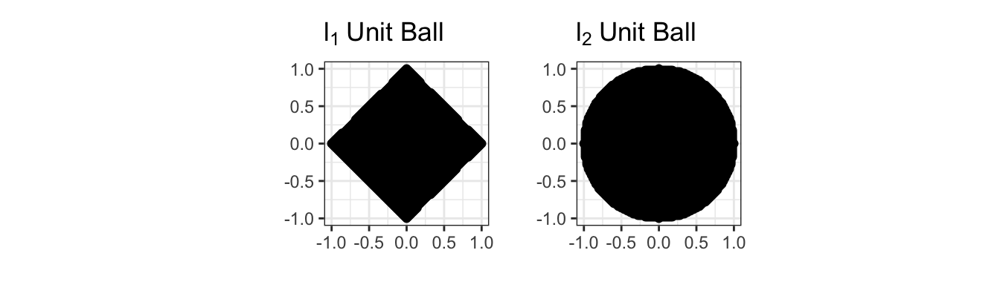
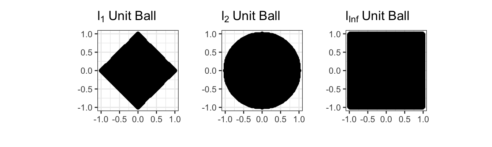

Last time, we discussed several challenges associated with doing statistical inference with many features; that is, data that is high-dimensional. Principally, these came from two sources:
Multiple testing problems: if we take enough swings, any rare event will eventually occur. In the context of statistical testing, this can blow up our normal error rate guarantees. Naively, we can just raise our bar to be ever stricter, but without sufficient data, this just winds up putting everything ‘out of reach’
Large variance problems: when estimating many values, the variance of our estimates can become uncomfortably large. To avoid this variance, we are willing to take on a bit of bias and, we balance things out correctly, this can net out well for us.
This bias can take two forms:
Intuitively, if we have lots of related little problems, we can partially pool information, e.g., shrink everything a bit towards the grand / population mean. Here, we massively reduce variance by blending together a large number of samples into the ‘shrinkage target’ and, if those samples are not too unrelated, we don’t incur too much bias along the way.
Less intuitively, we don’t actually need our different problems to be related at all; even in the case of estimating many independent normal means, a little bit of shrinkage always helps.
That latter phenomenon - most notably explored by James and Stein - is and should be quite counterintuitive. But ultimately, it comes from a close examination of bias and variance.
If we are estimating \(p \gg 1\) different means from a set of sample means, each with variance \(\sigma^2\), the total MSE of our problem will be \(p \sigma^2\). (Sample means are unbiased, so we only have variance here and variance adds for independent variables.) If instead of using the sample means \(\hat{\mu_i}\), we instead look at a slightly ‘shrunk’ version \((1 - \rho)\hat{\mu_i}\), we now have a small bias of
Of course, getting this right required us to know \(\mu_i^*, \sigma^2\) which we don’t normally have. (If we knew \(\mu_i^*\), why are we doing any of this?)
James and Stein’s remarkable finding was to show that a slight variant of this process works for all\(\mu_i^*, \sigma^2\).
[_i = TODO ]
What does any of this have to do with regression? Well, let’s go back to that MSE formula above; instead of picking just the best \(\rho\), let’s look at the derivative at 0:
[ = (^2 + ^2) - ^2 .|_{= 0} = -^2 < 0]
So a little bit of shrinkage towards zero always helps. The ideal amount depends on the specifics of \(\mu, \sigma\), but if there is any noise, a little bit of shrinkage towards zero should always help us.
Admittedly, this isn’t the easiest to see and we had to zoom, but it’s there! At zero, there is a small downward slope, so a tiny bit of shrinkage helps, even in this super simple problem.
In this way, I like to think of shrinkage as like salt in cooking. A little bit is essentially always helpful, but too much can certainly be a problem.
This general phenomenon is also referred to as regularization, as it relates to an older mathematical idea of ‘smoothing out’ the rough edges of models to make them more tractable. We won’t use that perspective in this course, but the term regularization is definitely worth knowing.
Ridge Regression - Core Idea
Ridge regression extends this idea to the high-dimensional regression setting. Recall that by high-dimensional, we many data with many features, possibly even more features than there are samples in the data set (‘wide’ data). In these scenarios, we have lots of variance –because we have little data to ‘tame’ it–so we want to apply some shrinkage to our data.
While the ‘make everything a bit smaller’ strategy does work, it’s a bit more conventional to represent this in a different way: we choose to keep the regression coefficients from being too big. Specifically, we’re going to put a max size on the total of our coefficients.
By imposing a ‘budget’ on our problem, we’re going to force most of the small effects to be even closer to zero and prevent the big effects from being too big. (Or at least, that’s the hope.) We can think of this as a sort of ‘adaptive’ shrinkage. While we started by shrinking multiple things totally independently, regression ‘blends’ all of our features together, so we want a more gloabl sort of shrinkage.
Constraints
To do this, we need to introduce the idea of constrained ERM. Recall that our general ERM for linear regression under MSE loss was
Here, we only require \(\bbeta\) to be a set of \(p\) real-valued coefficients (for our \(p\) features). This problem is functionally unconstrained. But we might consider other sorts of constraints: e.g., we might know that our features could only have a non-negative (zero or positive) coefficient based on some prior knowledge about the problem. In this case, we could modify the above problem as
\[\hat{\bbeta} = \argmin_{\substack{\bbeta \in \R^p \\ \beta_i \geq 0 \text{ for all } i}} \frac{1}{n}\sum_{i=1}^n (y_i - \bx_i^{\top}\bbeta)^2 \tag{NN-OLS}\]
This gives us non-negative OLS. Instead of looking at all coefficients, we just find the best non-negative\(\hat{\bbeta}\). That second part: non-negativity is a constraint. You can also write this as \(\bbeta \in \R^p_{\geq 0}\) where \(\R^p\) is the ‘positive orthant’ (the ‘positive corner’ of the real plane). Because \(\R^p_{\geq 0} \subsetneq \R^p\), this is a constrained problem.
Let’s think about what this does:
We’re looking over a smaller search space, so we have less variance
If our true \(\bbeta^*\) has some negative values, we will be systematically wrong, introducing bias.
So this is one of those ‘bias-variance’ gambits. If our restriction to non-negative values is true, this is a pure-win on variance and no pain on bias; if our true values are very large and negative, this can hurt us quite a lot. And if our true values are a mix of near zero, positive and negative, we may or may not benefit.
Alternatively, we can note that this is just like any sort of assumption in our modeling: if it’s true, it helps; and if it’s false, it can hurt.
Finally, we note that we might have other reasons beyond pure MSE optimization to consider this type of thing: NN-OLS may be far simpler to interpret and, it turns out, will wind up ‘zeroing’ (throwing out) lots of features. But we’re getting a few days ahead of ourselves.
Measuring the Size of Coefficients
Ok - non-negativity is straightforward enough. But how do we encode something like ‘not too big’? We need a way of describing how big a set of regression coefficients is.
Which of these is a ‘bigger’ set of coefficients:
\[(1, -1, 1) \text{ vs. } (2, 0, 0)\]
There are clearly several ways of measuring bigness that might make sense:
Number of non-zero elements (number of features used). Here, the first vector is clearly ‘bigger’ (3 vs 1)
Maximum (absolute) coefficient. Here, the second vector is clearly bigger (2 vs 1)
Sum of absolute coefficients. Here, the first vector edges out the second \(|1| + |-1| + |1| = 3 > 2 = |2| + |0| + |0|\).
Sum of squared coefficients. Here, the second edges out the first: \(2^2 + 0^2 + 0^2 = 4 > 3 = 1^2 + (-1)^2 + 1^2\)
All of these are correct for different types of problems, but we need a mathematical way to distinguish them. The mathematical concept of a norm measures ‘how big’ something is and, when applied to vectors of coefficients, we can measure these using the \(\ell_p\) family of norms:
\[\|\bx\|_p = \sqrt[p]{\sum_{i=1}^n |x_i|^p}\]
So, with our examples above, for the \(\ell_1\) norm, we had:
Here, the \(\ell_2\) norm measures distance ‘as the crow flies’ or in a straight line. (You might notice that this looks sort of like the Pythagorean theorem; that’s no coincidence.) Conversely, the \(\ell_1\) norm captures how many steps you might need to take on a rectangular grid. For this reason, the \(\ell_2\) norm is sometimes called the Euclidean norm while the \(\ell_1\) is called the taxicab or Manhattan norm because it captures how many blocks you would need to walk.1
Visually, these constraints give us different ‘balls’ that we are requiring our coefficients to fall in:

Here, the \(\ell_1\) “ball” is pointy and isn’t a ball in any normal sense, but that’s the terminology of math. The \(\ell_2\) ball should feel familiar.2
Here, we’re requiring the sum of squared coefficients from being more than some value \(\tau\). \(\tau\) here is a hyperparameter that we have to choose. Bigger \(\tau\) gives us a larger set of possible \(\bbeta\), hence more variance and less bias, while smaller \(\tau\) gives us more bias, but less variance.3
How can we choose \(\tau\)? This, like the \(K\) in \(K\)-NN, is one of those situations where pure ERM will fail us. Since the ball associated with a larger \(\tau\) always includes a smaller \(\tau\), pure in-sample minimization will always push us towards a bigger \(\tau\). We need to use some sort of holdout / cross-validation strategy here and will return to that in the future.
which is essentially the classical OLS problem (MSE ERM with a linear predictor) with the additional constraint: \(\|\bbeta\|_2 \leq \tau\) or, slightly more conveniently, \(\|\bbeta\|_2^2 \leq \tau^2\).4 Here, we’re putting the ‘ridge-ness’ in the constraint by requiring \(\bbeta\) to not be ‘too big.’
This is conceptually elegant, but it does pose a few practical challenges:
How can we pick \(\tau\)?
How can we solve the above problem? In particular, what happens if our gradient points us ‘beyond the bounds’ of our constraint?
These are definitely solvable (and indeed solved!) problems, but it certainly would be nice if we could get rid of the constraint. And as it turns out, we can. A bit of mathematical trickery lets us rewrite the above problem as
Here, we have moved our ‘ridgefulness’ out of the constraint and into a second part of our objective function. This is known as a penalty term as it keeps \(\bbeta\) from being ‘too big’. Notably, unlike the constrained form, we could theoretically get a really big\(\bbeta\), but it would have to ‘pay for itself’ in terms of better MSE. Essentially, we are putting a ‘price’ on bigger coefficients. We’re willing to use them, but only if they ‘prove their worth’ in terms of MSE.5
Constraints are a bit of a pain computationally (we have to modify normal gradient descent so it doesn’t take out out of bounds), so this penalized form is a bit more common in practice, but there is no conceptual difference. The penalty form lets us see how this works quite nicely.
Suppose we were using a first-order (gradient descent method). Normally, we would just take a step in the direction of the gradient of the loss. What happens here? Since the gradient of \(\|\bbeta\|_2^2\) always points outwards, a descent step will always steer us a bit back towards the origin.
Small effects => pirhanas, why not choose?
Small effects => stability
Weight decay
Ridge Regression
These notes are from a previous class and are a bit beyond the level of this course.
In the previous set of notes, we saw that \((\overline{X}_n)_{[-\beta, \beta]}\) could outperform the naive estimator \(\overline{X}_n\) if the true parameter is ‘not too big’.
Here, we have some choice in measuring the ‘size’ of \(\hat{\bbeta}\): in fact, we can theoretically use any of our \(\ell_p\)-norms. As with the squared loss, it turns out to be mathematically easiest to start with the \(\ell_2\) (Euclidean) norm. This gives us the so-called ridge regression problem:
\[\hat{\bbeta}_{\text{Ridge}} = \argmin_{\bbeta \in \R} \frac{1}{2}\|\by - \bX\bbeta\| \text{ such that } \|\bbeta\|_2 \leq {\tau} = \argmin_{\bbeta \in \R} \frac{1}{2}\|\by - \bX\bbeta\| \text{ such that } \|\bbeta\|_2^2 \leq {\tau}^2\]
Before we discuss solving this, let’s confirm it is convex. Recall that for a problem to be convex, it needs to have a convex objective and a convex feasible set. Clearly the objective here is convex - we still have the MSE loss from OLS unchanged. So now we need to convince ourselves that \(\|\bbeta\|_2^2 \leq \tau^2\) defines a convex set. We can look at this in 2D first:
are convex for all \(\ell_p\) norms (\(p \geq 1\)). We will use this fact many times in this course. The sets that this constraint defines are called \(\ell_p\) ‘balls’ by analogy with the \(\ell_2\) figure, even if they aren’t actually round.

So our ridge problem
\[\hat{\bbeta}_{\text{Ridge}} = \argmin_{\bbeta \in \R} \frac{1}{2}\|\by - \bX\bbeta\| \text{ such that } \|\bbeta\|_2^2 \leq {\tau}^2\] is indeed convex.
While we can solve this without too much trouble (though we need to adjust our basic gradient descent method to avoid going ‘out of bounds’), it turns out to be easier to use an optimization trick known as Lagrange Multipliers to change this to something easier to solve.
\[\argmin_x f(x) \text{ such that } g(x) \leq \tau\]
into unconstrained problems like:
\[\argmin_x f(x) + \lambda g(x)\]
Here, the constant \(\lambda\) is known as the Lagrange multiplier. Instead of forcing\(g(x)\) to be bounded, we simply penalize any \(x\) that makes \(g(\cdot)\) large. For large enough penalties (large \(\lambda\)), we will eventually force \(g(x)\) to be small enough that we satisfy the original constraint. In fact, there is a one-to-one relationship between \(\tau\) and \(\lambda\), but it’s usually not possible to work it out in any meaningful useful manner; all we can say is that larger \(\lambda\) correspond to smaller \(\tau\).
NotePause to Reflect
Why is this true? Why does small \(\tau\) imply large \(\lambda\) and vice versa?
In this form, it’s straightforward to pose ridge regression as:
There are several important things to note about this expression:
There are actually many ridge regression solutions, one for each value of \(\lambda\). It is a bit improper to refer to “the” ridge regression solution. We will discuss selecting \(\lambda\) below.
If you are a bit sloppy, this looks something like:
so we ‘shrink’ the standard OLS solution towards zero, by an amount depending on \(\lambda\). Higher \(\lambda\)
The penalized form (as opposed to the constraint form) allows for \(\hat{\beta}\) to be arbitrarily large, if the data supports it.
More than that, \(\lambda\) gives us an explicit trade-off. When comparing two potential solutions (\(\hat{\bbeta}_1, \hat{\bbeta}_2\)), we will prefer \(\hat{\bbeta}_1\) if:
That is, we will take a solution with a MSE that is \(\lambda\) lower if that lowers the squared-norm of the solution by 1. Here \(\lambda\) measures the “price” we are willing to pay (in terms of MSE) for shrinking the norm of \(\hat{\bbeta}\): at larger \(\lambda\), we demand a larger MSE reduction ceteribus paribus to accept a larger \(\hat{\bbeta}\), while at small \(\lambda\), we are willing to take a larger \(\hat{\bbeta}\) in exchange for a much smaller decrease in MSE.
If we set \(\lambda = 0\), we recover standard OLS. Continuing the ‘price’ discussion above, this is the limit in which we will take a larger \(\hat{\bbeta}\) for any decrease in training MSE. This makes sense as we originally built OLS as the ERM for MSE, by definition caring about only MSE reduction and nothing else.
Unlike the OLS solution, the ridge regression exists even when \(p > n\) because the \(+\lambda \bI\) term ensures the ‘denominator’ prefactor is always invertible.
While this isn’t as simple to analyze as some of the expressions we considered above, this looks similar enough to our ‘shrunk’ mean estimator that it’s plausible it will improve on OLS. In fact, you can show that there is always some value of \(\lambda\) that guarantees improvement over OLS in expectation. (This is a result known as the “MSE Existence Theorem”)
Clearly, for smallish \(\lambda\), we are actually outperforming OLS, sometimes by a significant amount! For this problem, the minimum MSE (best estimate) actually seems to occur near \(\lambda \approx\) 1.259
Footnotes
Yes, East-West and North-South blocks are not the same size in Manhattan, so the ‘real’ Manhattan norm should treat the two dimensions differently, but Manhattan isn’t \(p\)-dimensional so we accept a bit of over-simplification.↩︎
Formally, the \(\ell_2\) ‘circle’ is the boundary while the entire enterior is the ‘ball’. We basically always use ‘ball’ constraints instead of circle constraints. If the best value is even smaller than the edge of the ball, we don’t want to ‘drag’ things outwards.↩︎
Remember that the standard deviation of anything in statistics that takes values falling in the range \([a, b]\) is never more than \(|b-a|/2\), so by keeping our values in a \([-\tau, \tau]\) range, the standard deviation is basically capped at \(\tau\).↩︎
Any norm is non-negative, so both terms of this inequality are non-negative and squaring doesn’t change the order.↩︎
If this sounds like a ‘soft’ version of using \(F\)-tests, ANOVAs, or stepwise methods to decide what features to include in model, you aren’t wrong.↩︎